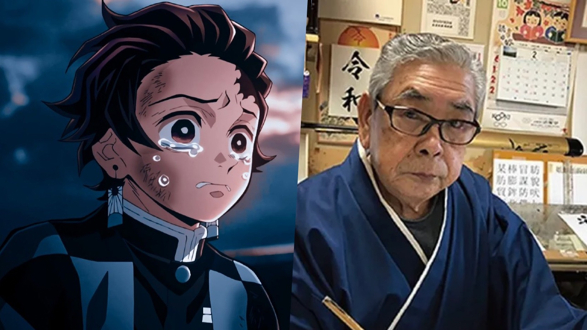

Autor de Kimetsu no Yaiba
Kimetsu no Yaiba, también conocido como Demon Slayer, fue creado por Koyoharu Gotouge, un mangaka japonés. Gotouge nació el 5 de mayo de 1989 y es conocido por su estilo narrativo envolvente y su habilidad para crear personajes profundos y emocionalmente complejos. A pesar de su éxito actual, Gotouge mantuvo un perfil relativamente bajo y solo se ha revelado poca información pública sobre él.
Koyoharu Gotouge comenzó su carrera como mangaka en 2013 cuando su obra corta Kagarigari fue presentada en una competencia de manga. Aunque no ganó, esta historia llamó la atención de los editores de Shueisha, quienes lo alentaron a seguir desarrollando su estilo. Fue después de varios intentos y modificaciones que Gotouge finalmente lanzó Kimetsu no Yaiba en 2016 en la revista Weekly Shonen Jump.
Kimetsu no Yaiba se convirtió en un éxito inesperado, capturando la atención de millones de lectores en Japón y en todo el mundo. La historia de Tanjiro Kamado, su hermana Nezuko, y la lucha contra los demonios resonó profundamente en la audiencia, gracias a la combinación de narrativa emocional, acción intensa, y temas de familia y redención. La serie fue adaptada al anime en 2019, lo que aumentó aún más su popularidad.
El éxito de Kimetsu no Yaiba llevó a Gotouge a ser reconocido como uno de los mangakas más influyentes de la época actual. En 2020, el manga se convirtió en el más vendido de Japón, y la adaptación al anime rompió récords de taquilla con la película Kimetsu no Yaiba: Mugen Train. Gotouge ha sido elogiado por su habilidad para crear personajes memorables y una historia que combina acción y emoción de manera magistral.
A pesar de la fama, Koyoharu Gotouge mantiene su vida personal en privado y se ha mostrado reticente a las apariciones públicas. Prefiere enfocarse en su trabajo creativo y continuar explorando nuevas ideas en el mundo del manga. Su estilo distintivo y su dedicación a la narrativa lo han establecido como un autor único en la industria del manga.